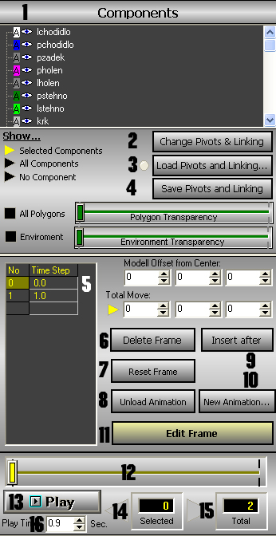
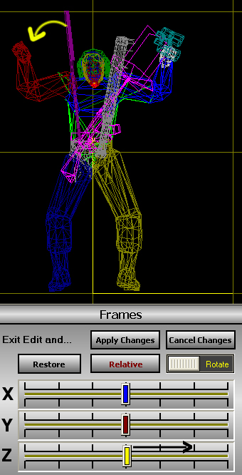

Tutoriál k OFP Anim #1
|
OFP Anim |
Pavka 8. února 2004 |
Autor tutoriálu:
Pavka
Co je OFP Anim
OFP Anim je program, který slouží k tvorbì animací objektù do hry
Operace Flashpoint. Jako vìtèina programù potøebuje editovatelné modely.
Tyto modely lze oficiálnì najít pouze v souboru data3d.pbo z dema hry.
Jinak jsou na stažení na
Flashpoint Tiscali v archívu novinek roku 2003 a mìsíc bøezen. Taky nedávno na stránkách
Breathe dali na stažení nìkolik editovatelných oficiálních modelù z Resistance.
Program OFP Anim mùžete stáhnout zde.
Popis okna
K tomu abychom zvládli udìlat dobrou animaci staèí vìdìt co znamená pár tlaèítek.
|  |
1. Seznam selekcí modelu
2. Ukáže model/animaci
3. Nìco nahraje?
4. Nìco uloží?
5. Jednotlivé èásti animace
6. Vymaže zvolenou èást animace
7. Resetne èást animace
8. Zruší animaci
9. Vloží èást animace
10. Nová animace
11. Editovat èást animace
12. Èasová osa animace
13. Podívat se na animaci
14. Zvolená èást animace
15. Celkový poèet èástí animace
16. Délka trvání animace |
Jistì si všimnete že když kliknete na Edit Frame, tak se vám objeví
další nabídka, ale její funkci si popíšeme v praktické èásti.
Zaèínáme s animací
OK, takže máme za sebou teorii, teï pøejdeme k praksi. Udìláme si
animaci aby voják mìl jednu ruku nahoøe, druhou na nìco ukazoval a mìl
ji pøitom oddìlenou od tìla.
1. Otevøeme si model (file > load p3d) z dema mc Pilotw2.p3d a animaci (file > load anim) para.rtm.
2. Následnì si na èasové ose zvolíme snímek è. 2 a vymažeme ho tlaèítkem
Delete frame. Tak budeme pokraèovat dokud nám nezbyde jen první a
poslední snímek.
3. Oznaèíme si první snímek a dáme Insert after. Mezi první a druhý snímek se nám vložil tøetí a ten si oznaèíme.
4. V seznamu selekcí si oznaèíme Ploket, takže se oznaèí i to co je po nìm (pprsty)
5. Zvolíme edit frame a tam kde byla pøed tím èasová osa jsou nyní
pohybové možnosti. Myslím že všemu co tam je rozumíte, tak to nebudu
úplnì popisovat.
Všimnìte si že když kliknete na text Rotate, tak se odkryje Move. To
stejné s textem Relative > Absolut.
6. Abychom docílili toho co cheme, èili aby voják zvedl ruku tøeba za
dvì sekundy, musíme mu udìlat nìkolik snímkù pohybu. OFP Anim si bohužel
nevypoèítá prostøední èásti.
6.1. Takže pokud jste si ještì neoznaèili selekci ploket,
tak tak nyní uèiòte. Kliknìte na edit frame a osu Z pusòte lechce do
prava. Vidíte jak se vojákovi pravá ruka pohybuje dolù? Nechte to
posunutý tak dlouho, dokud se jeho loket dostateènì nepohne. Potom dáme
apply changes a první èást animace je na svìtì.

7. Opìt vložíme nový snímek a opìt pohneme rukou dokud nebude mít témìø úplnì nataženou paži.
8. Klikneme na tlaèítko Rotate, takže se nám objeví Move. Pak si zvolíme
selekci pruka a pohneme osou X doleva. Toto udìláte u každého vašeho
snímku, vždycky o nìco víc.
9. U play time nastavíme 2 sekundy a animaci uložíme pod názvem first_anim.rtm
Dejte si pozor na deformace pøi posouvámní selekcí. U otáèení se to
stane málokdy, jen se témìø pokaždé zdeformují záde a je velmi tìžké to
napravit.
Vložení do hry
K tomu aby animace fungovala ve høe musí mít stejnì jako addony soubor config.cpp. Tady je ukázka takového configu:
class CfgPatches
{
class first_anim
{
units[] = {};
weapons[] = {};
worlds[] = {};
requiredVersion = 1.91;
};
};
class CfgMovesMC
{
class Default {};
class StandBase: Default {};
class States
{
class first_anim: StandBase
{
actions = StandTalkActions;
file=\animace\first_anim.rtm;
speed = -10;
looped=false;
soundEnabled=false;
duty = RestDuty;
interpolationSpeed=1;
connectFrom[]={Stand, 1, StandVar2, 1, StandVar3, 1};
connectTo[]={Stand, 1, StandVar2, 1, StandVar3, 1};
interpolateTo[]={StandDying,0.1,StandDyingVer2,0.1};
};
};
};
Moc vám to nedokážu popsat, protože sám nevím všechno, ale co vím vám napíšu:
file - název souboru s animací. POZOR: \animace\ je název složky ve které ta animace je a kterou zabalíte do pbo
speed - rychlost pøehrávání animace, udává se v +/- 0 je normální
interpolationspeed - rychlost pøechodu na další animaci
connectFrom/To - animace ze/do kterých se z vaší animace voják dostane
interpolateTo - smrtelný pohyb který jednotka po zasažení vykoná
A aby toho nebylo málo vložte vaší animaci s configem do složky animace, zabalte ji do pbo a vložte do adresáøe addons v OFP.
Spuštìní ve høe
nìjakému vojákovy dejte:
nazev_vojaka switchmove "first_anim"
a voják by mìl vaši animaci provést.
Závìr
Doufám, že vám mùj tutoriál pomohl a že teï už dokážete nìjakou tu
animaci udìlat. Jakékoliv pøipomínky èi dotazy posílejte na moji
e-mailovou adresu pavkaofp@mujbox.cz
èi na moje ICQ 209876132. Tìším se na vaše dobré animace.
|
|